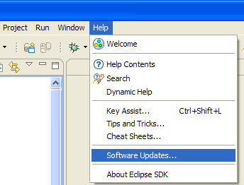
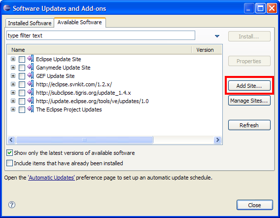
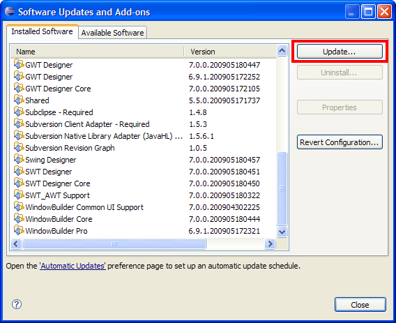
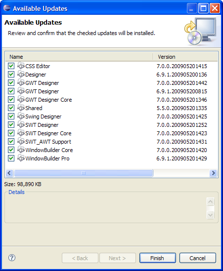

Update Site Installation into Eclipse 3.4.x
Before you install:
- Make sure your system is supported. See the product's System Requirements.
- Make sure Eclipse is installed. You can download Eclipse from
the Eclipse.org
website.
- Make sure Java is installed. You can download Java from Sun's
website.
- Warning: Due to a known
p2 bug in Eclipse 3.4, if you previously installed using
the installer or a zip file, you need to uninstall and start with
a fresh copy of Eclipse.
Choose from the following options:
Follow these steps if the product has not been previously installed in this instance of Eclipse/IDE.
- In Eclipse, click Help > Software Updates...
 Software Updates Menu">
- In the Software Updates and Add-ons dialog, select the Available Software tab and click the Add
Site... button.

- Get the update site location from the product download page.
On the download page, right-click on the Update Site URL button and
copy the link location to your clipboard.
- Paste the site location (URL) into the Location:
text box. Hint: You may also drag and drop a site
URL from a web browser into the Location text box or the Available
Software page.
- Click OK to close the Add Site dialog. You should now
see a new update site added to the Available Software list.
- Check all features to be installed and click the Install...
button.

Above is a screen shot of WindowBuilder Pro 7.0 Update Site
Features to be installed. Yours may look different depending on the
version and the product you're installing.
- Click Next to confirm installation.
- Read and accept the license agreement. To continue installing,
select "I accept the terms of the license agreement" and click Finish.
- When prompted to restart Eclipse, click Yes to restart.
Follow these steps if the product has been previously installed in this instance of Eclipse using the update site and you just want to update to get the latest build.
- In Eclipse, click Help > Software Updates...
Software Updates Menu">
- In the Software Updates and Add-ons dialog,
select the Installed Software tab.
- Click the Update... button to check for available
updates.

- If new updates are available, the Available Updates dialog comes up. Leave everything selected and click Finish to continue.

- When prompted to restart Eclipse, click Yes to restart.